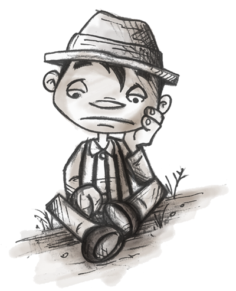
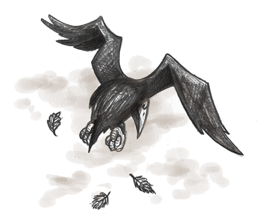
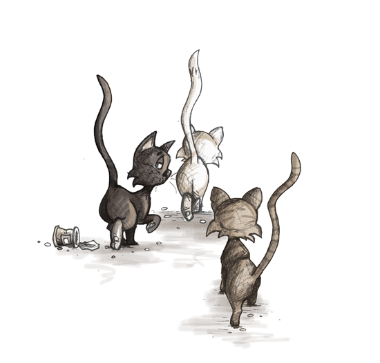
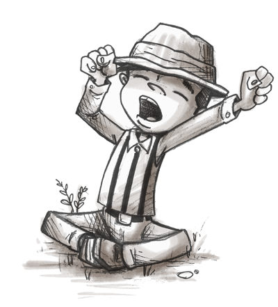

Roberto
Words by Michael Horn, Sarah AlSulaiman, and Jaime Koh
Pictures by Igor Ivanovic
Software by Michael Horn and Sarah AlSulaiman
Words by Michael Horn, Sarah AlSulaiman, and Jaime Koh
Pictures by Igor Ivanovic
Software by Michael Horn and Sarah AlSulaiman

 How to use this book
How to use this book
Hi, I'm Roberto. Let's go on an adventure! When you see this picture
use the stickers in the book to help me make new friends.
Just put the stickers on the dashed outlines on the page.
Then use the Roberto Storybook app to take a picture of the page with your smart phone or tablet computer.
Roberto will act out the words on the stickers.
Download our app at http://tidal.sesp.northwestern.edu/StickerBook
Roberto had nothing to do. When the sun rose, he just wanted to go back to bed. At his old home, he'd be dancing through the hills by now.
But two days ago, Roberto and his family had moved to the city. Roberto missed his old house, his old neighborhood, his old school. But most of all he missed dancing with his friends.

 As he sat alone in the cold morning gloom, Roberto heard a squawk and yowl
sound out in the alley. A truck horn add a low blast, and a
church bell chimed in with the melody. Roberto swung his legs and drummed
out a beat.
As he sat alone in the cold morning gloom, Roberto heard a squawk and yowl
sound out in the alley. A truck horn add a low blast, and a
church bell chimed in with the melody. Roberto swung his legs and drummed
out a beat.
It wasn't his dad's band, but it was a tune. Roberto jumped to his feet, and before he knew it, he was dancing in the street. “Now, to find a friend,” Roberto decided.
Use the stickers to make Roberto to dance.
So he marched to the end of the street and saw a bird perched on a lamppost.
“Hello there,” he smiled, “do you like to dance? I'll be your new friend if you give me a chance.”
And then without waiting for the bird to reply, Roberto began to dance. As he danced, he forgot all of his worries, but he also forgot to stop dancing!
Can you make Roberto dance without stopping?
“You dance too much!” the bird squawked. “How can I dance with someone who won't ever stop?”
And watching the bird as it flew away, Roberto thought to himself, I won't give up.
He turned the corner to search for another friend. Three cats looked up from their morning meal.
“Excuse me,” he said. “Wouldn't it be fun for us all to dance together?”
And then, three times, Roberto gave a tip of his hat and performed his whole dance, once for each cat.
Can you make Roberto do his dance three times?
The cats all yawned and stuck their tails in the air. “Dance all you want, why should we care?” Hanging his head Roberto kept walking.
By late afternoon Roberto had found many animals, but none of the birds, rabbits, dogs, or squirrels wanted dance with him. Roberto was tired. It had been a long day and he decided to take a nap under the shade of an old tree. Just as he was dozing off, a girl from the city happened to walk by. She found Roberto sleeping and cautiously tapped him to wake him up.
Use the stickers to make Roberto wake up when you tap on him.

How do you think the story ends?